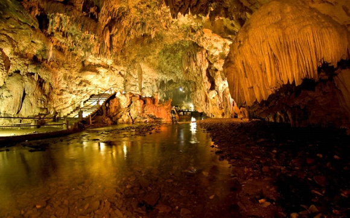
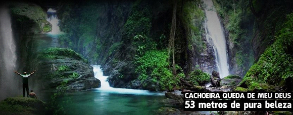

Eldorado foi palco de expedições científicas, lideradas pelo pesquisador alemão Richard Krone, onde importantes cavernas foram catalogadas, entre elas a Gruta da Tapagem, hoje famosa pelo nome de “Caverna do Diabo”, considerada uma das mais belas do mundo. O nome causa estranheza e pode dar medo, mas a caverna é belíssima e lembra imponentes igrejas de estilo barroco. Atualmente são conhecidos 6.500 metros (explorados), sendo que somente 700 metros são permitidos a visitação. O Parque Caverna do Diabo, criado em 1969 é a segunda maior unidade de Conservação do estado, com uma área total de aproximadamente 150.000 hectares, abrigando grandes extensões de Mata Atlântica e outros ecossistemas em seu interior. No parque existe um grande número de espécies animais e vegetais, muitas desconhecidas ou pouco estudadas pela ciência. Recentemente foi encontrada uma nova espécie de primata, o mico leão caiçara. Além dessas espécies, são encontrados nas florestas vários animais ameaçados de extinção como o mono carvoeiro, a lontra, a jaguatirica, papagaio de cara roxa, jacu e também espécies vegetais características da Mata Atlântica como o palmito juçara, planta que está cada vez mais escassa.
A cachoeira Queda do Meu Deus, em Eldorado, foi eleita pelos telespectadores do programa Antena Paulista, da TV Globo, a mais bonita do estado de São Paulo. O Antena Paulista, apresentado pelo jornalista Carlos Tramontina, realizou uma série de reportagem sobre as cachoeiras do estado, apresentando quedas em sete municípios. Depois, lançou, na internet, um concurso para eleger a mais bonita e a Queda do Meu Deus foi eleita com 73% dos votos. A Cachoeira tem uma imensa queda de 53 metros e sua origem está numa nascente em área fechada, que atravessa quatro quilômetros no interior da Caverna do Diabo. O acesso mais curto para a bela cachoeira é uma caminhada de dificuldade média (uma hora), que passa por piscinas naturais com água cristalina e três quedas menores. Há outro caminho pela trilha completa do Vale das Ostras (cinco horas), incluindo mais 11 quedas. Nesse caso é obrigatório contar com a presença de um monitor.
